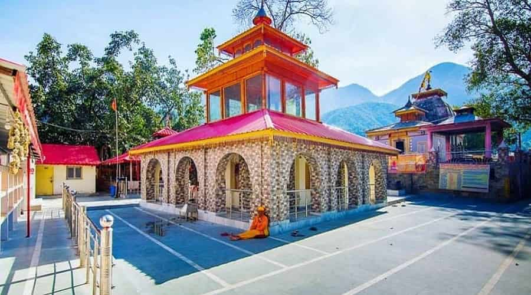
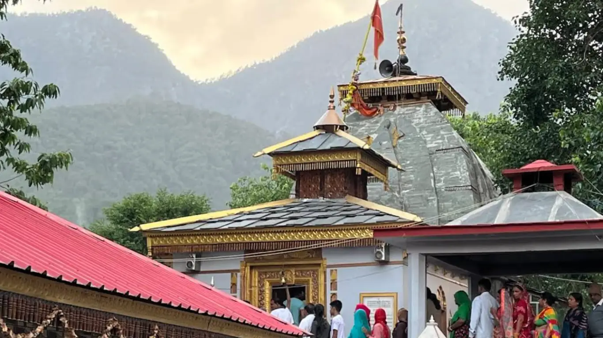
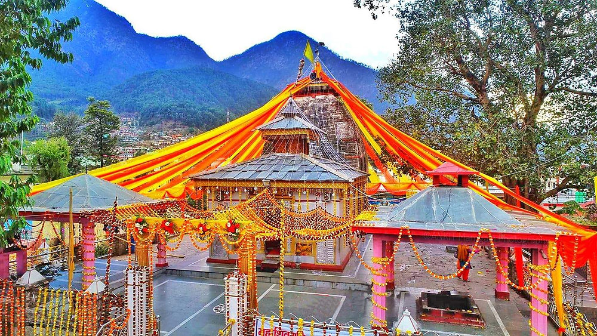
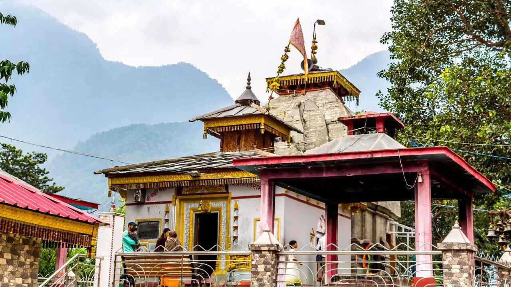

Kashi Vishwanath Temple in Uttarkashi is one of the most revered shrines dedicated to Lord Shiva in Uttarakhand, often regarded as the Himalayan counterpart of the famous Kashi Vishwanath Temple of Varanasi. Situated on the banks of the sacred Bhagirathi River, this ancient temple holds immense spiritual significance and is deeply connected with Hindu mythology and the Char Dham Yatra route. The temple houses a powerful Shiva Lingam and is believed to be a place where devotees can seek blessings for peace, liberation, and protection. Surrounded by majestic mountains and serene natural beauty, the temple radiates a divine aura that attracts pilgrims, sages, and travelers throughout the year.
One of the unique features of this temple is the massive Trishul (trident) located in its courtyard, believed to be associated with Lord Shiva himself. Devotees often try to move the Trishul with a single finger, and it is said that only those with true devotion can feel its divine vibration. Uttarkashi, meaning "Kashi of the North," has been a center of spiritual learning and meditation for centuries. The temple becomes especially vibrant during festivals like Maha Shivratri, when thousands of devotees gather to offer prayers, perform rituals, and immerse themselves in the sacred atmosphere of devotion and faith.
March to June offers pleasant weather (10–25°C), ideal for temple visits and sightseeing. September to November is also perfect with clear skies and scenic mountain views after monsoon. Avoid heavy rains (July–August) due to landslides. Winters (December–February) are cold but peaceful, offering a quiet spiritual experience with fewer crowds.
Darshan of the sacred Shiva Lingam, witnessing the powerful Trishul in the temple courtyard, attending daily aarti and rituals, exploring nearby Bhagirathi river banks, visiting Nehru Institute of Mountaineering, and experiencing the peaceful spiritual vibes of Uttarkashi town surrounded by the Himalayas.
Visit early morning or evening for a peaceful darshan, maintain temple decorum and silence, carry warm clothes even in summer (weather changes quickly), avoid peak rush during festivals unless prepared, keep cash handy (limited digital access), and explore nearby spiritual spots for a complete experience.
"In the sacred land of Uttarkashi, where the Bhagirathi flows with divine grace, Lord Shiva resides as Vishwanath, blessing every soul that seeks him. Amid the silence of the mountains and the echoes of temple bells, one finds not just devotion, but a deep connection to the eternal truth that the divine is always within reach."